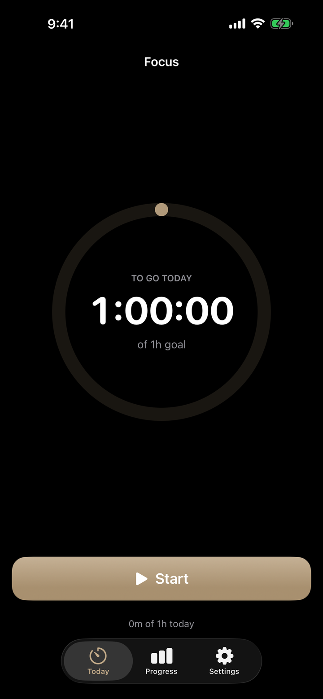

A timer that gets you out of the app.
One button. A calm countdown. Hours that compound.
Set a daily goal. Press start. Work. That is the whole app. There are no accounts, no streak-shaming, no notifications begging you back, and no feed — the entire design exists to put you back into your work, not to keep you inside the software. Sessions are structured around real cognitive limits, and a daily intention puts one clear priority in front of you before the phone has a chance to take over.
